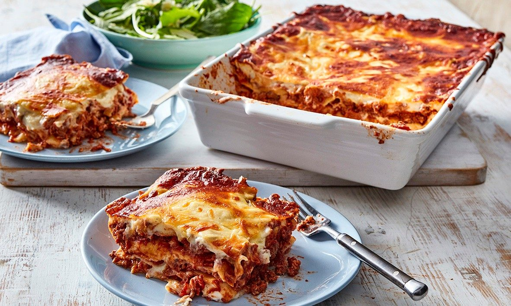

Back to homepage
Classic Beef Lasagne

Prepare this easy homemade lasagne ahead of time and save in the freezer, uncooked, for when you need it during a busy week. Then just bake for an extra 45 mins.
*NOT suitable for Vegetarians*
Details:
- Serves: 6
- Cooks in: 1 hour and 40 minutes
- Difficulty: Easy
Ingredients:
- 2 TBSP of olive oil, plus a little for the dish
- 750g lean beef mince
- 190g pack prosciutto
- Tomato sauce
- 200ml hot beef stock
- A little grated nutmeg
- 300g pack fresh lasagne sheets
- White Sauce
- 125g ball mozzarella, torn into thin strips
Instructions:
- To make the meat sauce, heat 2 tbsp olive oil in a frying pan and cook 750g lean beef mince in two batches for about 10 mins until browned all over.
- Finely chop 4 slices of prosciutto from a 90g pack, then stir through the meat mixture.
- Pour over 800g passata or half our basic tomato sauce recipe and 200ml hot beef stock. Add a little grated nutmeg, then season.
- Bring up to the boil, then simmer for 30 mins until the sauce looks rich.
- Heat oven to 180C/fan/160C/gas 4 and lightly oil an ovenproof dish (about 30 x 20cm).
- Spoon one third of the meat sauce into the dish, then cover with some fresh lasagne sheets from a 300g pack. Drizzle over roughly 130g ready-made or homemade white sauce.
- Repeat until you have 3 layers of pasta. Cover with the remaining 390g white sauce, making sure you can't see any pasta poking through.
- Scatter 125g torn mozzarella over the top.
- Arrange the rest of the prosciutto on top. Bake for 45 mins until the top is bubbling and lightly browned.